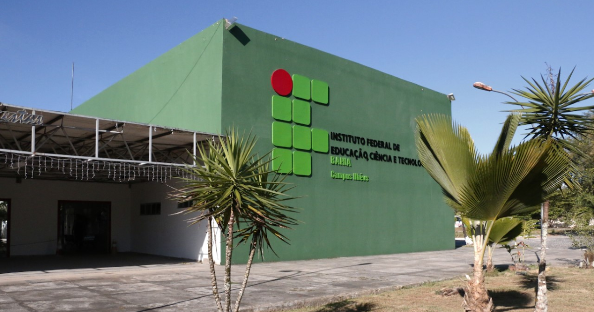

O IFBA Campus Ilhéus possui uma infraestrutura ampla composta por diversas salas de aula, laboratórios acadêmicos, auditórios e setores administrativos. Atualmente, o mapeamento das salas e a gestão das alocações e manutenções desses aparelhos enfrentam desafios logísticos: dificuldade em identificar a localização exata de cada equipamento, falta de histórico centralizado das manutenções (preventivas e corretivas), ausência de controle sobre a vida útil e garantia, além de falta de monitoramento do consumo elétrico e dimensionamento térmico.